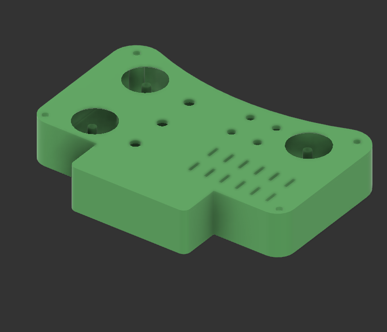
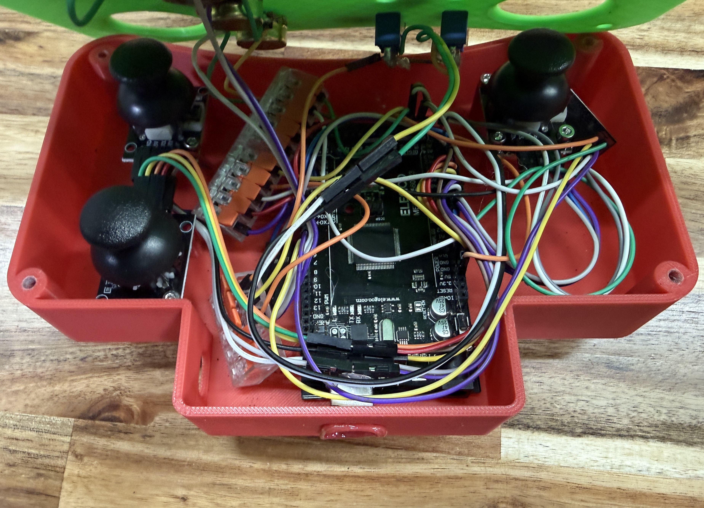

Universal Robot Controller
A Wireless Controller for my Robots
- Seamlessly connects to any Arduino with a nRF24L01
- Sends all input data 20 times per second
Mechanical & Hardware Design
- The case is completely 3D printed
- Includes 14 input options
- Designed in Fusion 360


Electronics
- All of the inputs are powered by the Arduino
- The Arduino is powered by an external USB power bank on the bottom of the remote controller
Software
- Written in C++
- Uses nRF Libraries
- Utilizes a Struct to send all inputs